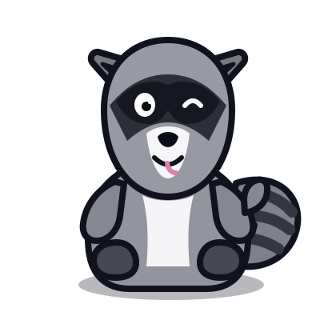

Available
Money Tracker
The first full KayWorks app. It keeps your finance history in your browser, handles the messy parts of everyday money, and gives you a way to back everything up yourself.
Open Money Tracker ↗This is where I keep the web apps I build. Most of them start because I want a simpler way to do something, and if they end up useful to other people too, even better.

The first full KayWorks app. It keeps your finance history in your browser, handles the messy parts of everyday money, and gives you a way to back everything up yourself.
Open Money Tracker ↗The first full app here. It keeps your finance history in your browser and helps sort out spending, income, reimbursements, recurring payments, and the other stuff that gets messy in real life.
Open Money Tracker ↗A simpler way to log workouts, with AI helping turn messy notes into structured entries instead of making you fill out a dozen fields.
A new version of a climbing tracker I originally made as a student, rebuilt around the way I like making apps now.
I like making software in my free time. Most projects start with something pretty ordinary: I want a better way to keep track of something, an existing app is doing way more than I need, or I think a small annoyance could be handled better.
Once one of those projects gets useful enough, I clean it up and keep it here. I like making things that work well and letting other people use them if they happen to fit what they need.
I tend to prefer apps that open quickly, explain themselves, and do not make you create an account unless there is a real reason for one. If data can stay on your device and still do the job, that is usually where I want it.
A simpler way to log workouts, with AI helping turn messy notes into structured entries instead of making you fill out a pile of fields.
A new version of a climbing tracker I originally made as a student, rebuilt around the way I like making apps now.
The finished projects live here, with a separate demo if you just want to look around first.
Money Tracker is a local-first personal finance app for keeping track of spending, income, reimbursements, recurring payments, person-to-person payments, investments, and the stuff that usually gets messy between a bank statement and real life.
The point is not to turn budgeting into another chore. Put the information in, let the app organize it, and check the numbers when you actually want them.
This is where I keep projects that are still taking shape. Some will turn into finished apps, some may change a lot along the way.
I want workout logging to feel less like filling out paperwork. The main idea is that you can paste a plan or type messy notes and let AI turn that into structured exercises, sets, reps, weight, and sessions.
The app itself will still own the real math: volume, progression, personal records, workout frequency, and history. Nutrition may fit later, but I’m not counting it as a feature yet.
Ascend is a climbing tracker I originally made as a student. I want to revisit it now with a cleaner interface, better history, and the same local-first approach I use for newer apps.
The direction includes sessions, climbs, grades, attempts, sends, flashes, projects, and progression. The old project gives me a useful starting point for rebuilding it around the way I make apps now.
If another small app solves a problem well enough that I keep using it, it will probably end up here too.
The basic idea is simple: use the lightest setup that can do the job reliably, then add structure when the app actually needs it.
The technical choices mostly exist so the app can stay easy to use.
If an app can remember what it needs in your browser, there is usually no reason to make you create a login first.
Where it makes sense, your data stays in browser storage on your device instead of being sent to a central database.
Local data can still be lost if browser storage is cleared or a device disappears. Apps with meaningful history should give you a way to export and restore it.
If an app stores its history in your browser, clearing that browser data or losing the device can also mean losing the history. That is why apps with important data should give you a way to export a backup.
Money Tracker is the first project here big enough to need a more structured codebase.
UI code should deal with the interface. Financial or other domain logic should work without depending on the screen. Storage should have a clear boundary instead of being scattered everywhere.
AI can be useful for turning messy text into structured input. Important calculations and stored behavior should still be validated and handled deterministically by the application.
HTML, CSS, JavaScript, browser APIs, and static hosting cover most of what these projects need. If a project needs more later, the setup can grow with it.
A tiny utility should stay tiny. A larger app can grow data, domain, parser, UI, test, and release layers when those boundaries actually make the project easier to maintain.